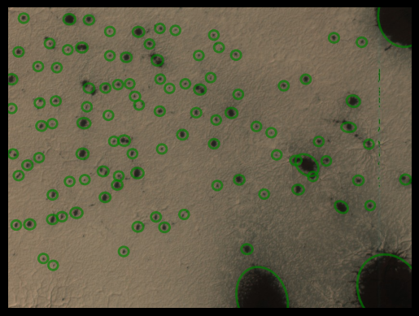
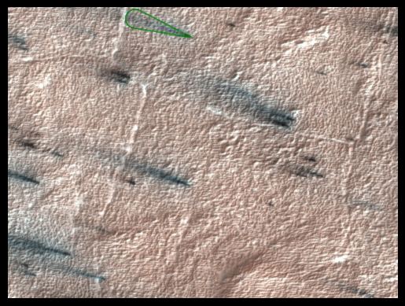
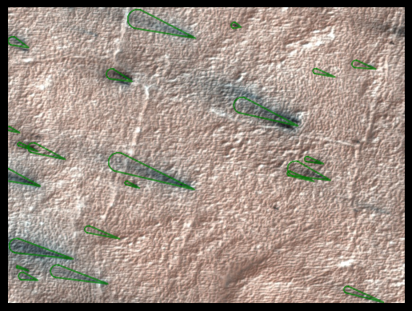

from p4tools import io
from p4tools import markings as m
from p4tools import plottingPlotting examples
plotting stuff with
p4tools
Defining three tile_ids for later use:
tid1, tid2, tid3 = "APF00006tp APF0000tld APF000018t".split()Plot original tile
Plot the HiRISE tile used as input for the Citizen scientist:
plotting.plot_original_tile(tid1)Plot original and fans
Plot the HiRISE tile without and with the fans for a given tile_id:
plotting.plot_original_and_fans(tid2)Plot blotches for tile
Simply plot all blotches for a given tile_id on top of the HiRISE tile:
plotting.plot_blotches_for_tile(tid3)
Get fans for tile
get a dataframe with all fans for a given tile_id:
fans = io.get_fans_for_tile(tid2)fans.head()| marking_id | angle | distance | tile_id | image_x | image_y | n_votes | obsid | spread | version | ... | y_angle | l_s | map_scale | north_azimuth | BodyFixedCoordinateX | BodyFixedCoordinateY | BodyFixedCoordinateZ | PlanetocentricLatitude | PlanetographicLatitude | Longitude | |
|---|---|---|---|---|---|---|---|---|---|---|---|---|---|---|---|---|---|---|---|---|---|
| 92197 | F019802 | 198.90 | 150.30 | APF0000tld | 1136.65 | 19247.23 | 15 | ESP_020780_0930 | 18.54 | 1 | ... | -0.32 | 209.289 | 0.5 | 147.656314 | -188.190090 | 9.138895 | -3375.683769 | -86.805383 | -86.842804 | 177.219784 |
| 92198 | F019803 | 200.62 | 57.30 | APF0000tld | 1002.62 | 19342.12 | 18 | ESP_020780_0930 | 27.78 | 1 | ... | -0.35 | 209.289 | 0.5 | 147.656314 | -188.271026 | 9.144102 | -3375.677338 | -86.804005 | -86.841441 | 177.219397 |
| 92199 | F019804 | 200.83 | 144.01 | APF0000tld | 1353.63 | 19439.44 | 24 | ESP_020780_0930 | 15.73 | 1 | ... | -0.35 | 209.289 | 0.5 | 147.656314 | -188.148590 | 9.276155 | -3375.698357 | -86.805985 | -86.843398 | 177.177473 |
| 92200 | F019805 | 196.52 | 40.93 | APF0000tld | 1407.57 | 19522.45 | 8 | ESP_020780_0930 | 18.18 | 1 | ... | -0.28 | 209.289 | 0.5 | 147.656314 | -188.147319 | 9.325112 | -3375.700971 | -86.805968 | -86.843381 | 177.162581 |
| 92201 | F019806 | 199.04 | 94.72 | APF0000tld | 1422.20 | 19558.77 | 14 | ESP_020780_0930 | 24.17 | 1 | ... | -0.33 | 209.289 | 0.5 | 147.656314 | -188.150649 | 9.344215 | -3375.703740 | -86.805898 | -86.843312 | 177.156828 |
5 rows × 24 columns
Plot longest fan of a tile
use distance to find the longest fan in this dataframe:
fans.columnsIndex(['marking_id', 'angle', 'distance', 'tile_id', 'image_x', 'image_y',
'n_votes', 'obsid', 'spread', 'version', 'vote_ratio', 'x', 'y',
'x_angle', 'y_angle', 'l_s', 'map_scale', 'north_azimuth',
'BodyFixedCoordinateX', 'BodyFixedCoordinateY', 'BodyFixedCoordinateZ',
'PlanetocentricLatitude', 'PlanetographicLatitude', 'Longitude'],
dtype='object')maxrow = fans.loc[fans.distance.idxmax()]maxrowmarking_id F019808
angle 200.42
distance 192.6
tile_id APF0000tld
image_x 1134.45
image_y 19579.06
n_votes 14
obsid ESP_020780_0930
spread 13.76
version 1
vote_ratio 1.0
x 394.45
y 399.06
x_angle -0.94
y_angle -0.35
l_s 209.289
map_scale 0.5
north_azimuth 147.656314
BodyFixedCoordinateX -188.276868
BodyFixedCoordinateY 9.278102
BodyFixedCoordinateZ -3375.687042
PlanetocentricLatitude -86.803805
PlanetographicLatitude -86.841243
Longitude 177.178801
Name: 92203, dtype: objectuse the Fans (or Blotch) objects of the marking module (here abbreviated to m during import above):
fan = m.Fan(fans.iloc[0])
fanmarkings.Fan object. Input data:
base: [396.65 67.23]
armlength: 130.9202339705439
arm1: [267.57461777 45.32900995]
arm2: [281.23716847 5.42396484]and then let the fan object plot itself:
fan.plot()
or, as above, use the plotting module function to plot all of the tile:
plotting.plot_fans_for_tile(tid2)
find good combo images
below call saves the plot under the tile_id name in the current working directory:
plotting.plot_original_fans_blotches("APF000018t", save=True)Plot x random tiles with at least n fans
Below functions is fancy: Find x random tiles with at least n fans and plot them:
plotting.plot_x_random_tiles_with_n_fans?Signature:
plotting.plot_x_random_tiles_with_n_fans(
x: int = 3,
n: int = 15,
save: bool = False,
random_state: int = None,
)
Docstring: <no docstring>
File: ~/Dropbox/src/p4tools/p4tools/plotting.py
Type: functionplotting.plot_x_random_tiles_with_n_fans(3, 15, save=False, random_state=42)get some meta data
get the HiRISE obsid for a given tile_id:
io.get_hirise_id_for_tile("APF0000wfo")'ESP_020953_0925'Once more: plotting blotches and fans beside the original tile
note that there’s often both kinds of markings existing in the same tile, so you can plot them both alone or together:
plotting.plot_original_and_fans("APF000003x")plotting.plot_original_and_blotches("APF000003x")plotting.plot_original_fans_blotches("APF000003x")